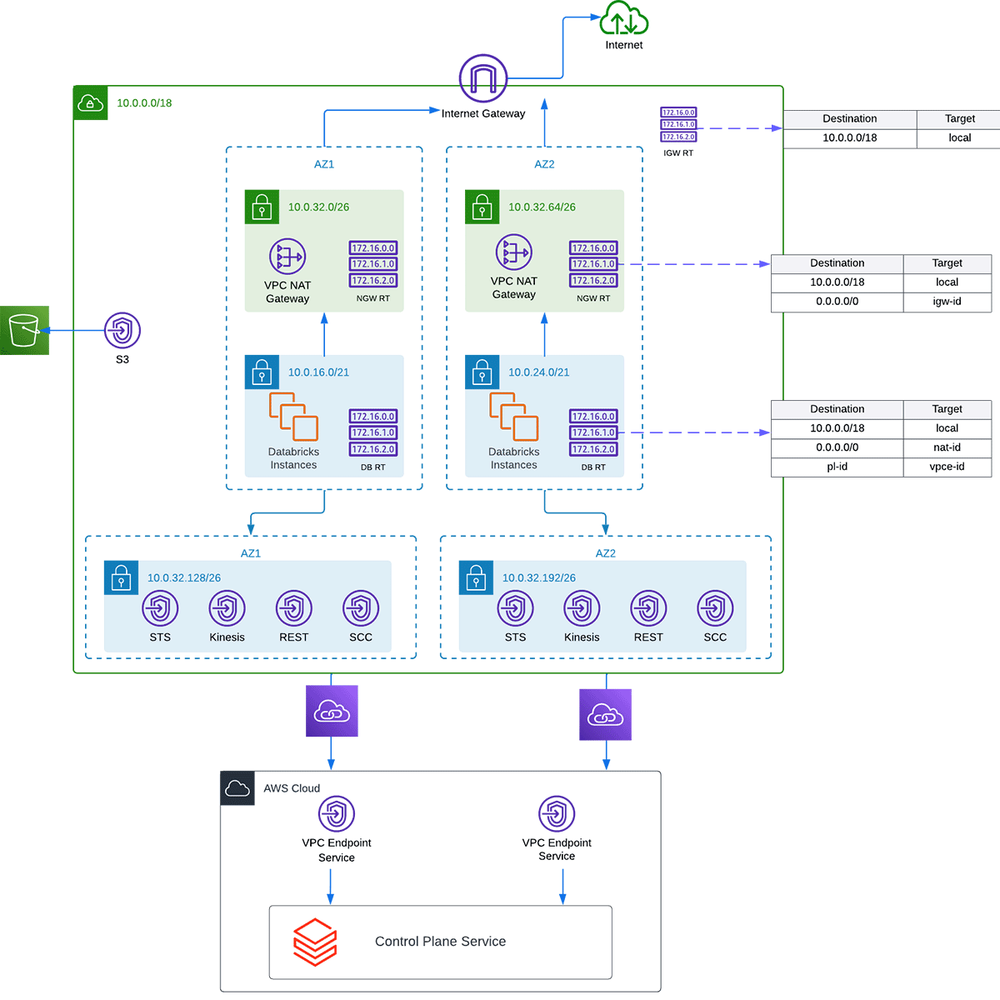
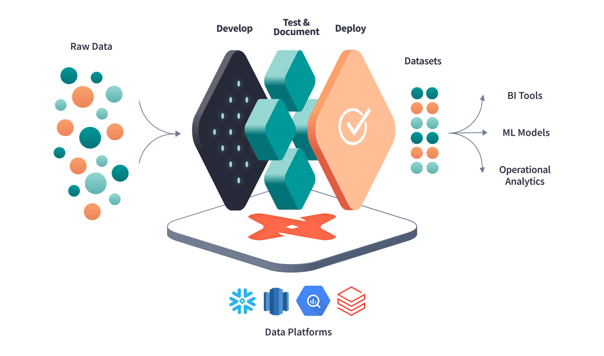

Lakehouse & Transformation
PrivateLink between control and data planes, customer-managed keys throughout, and dbt as the transformation layer.

Enables a private connection between the control plane and data plane. PrivateLink also redirects traffic from the data plane to the control plane using the NAT Gateway to VPC endpoints.
All roles and permissions managed through Terraform — easy to keep track of who has what access.

Set up a firewall; set up authentication.